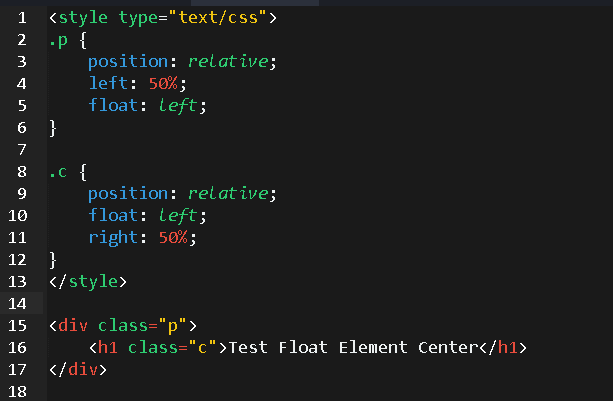
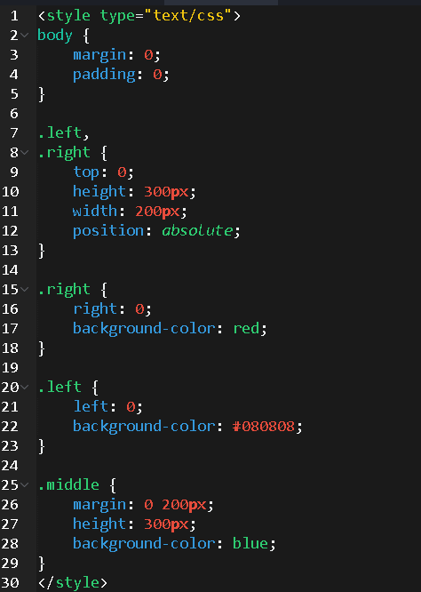
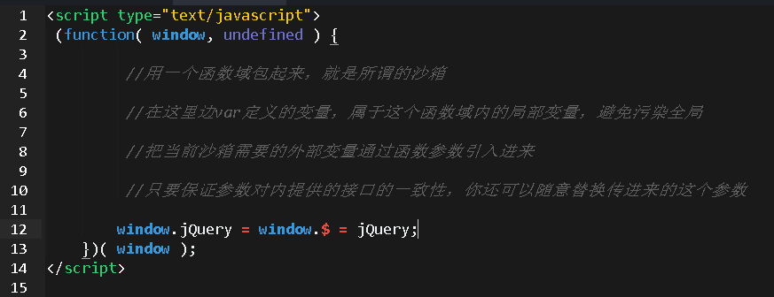
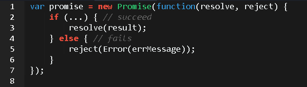
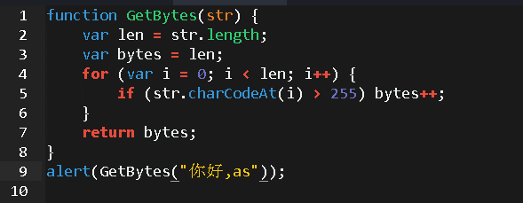
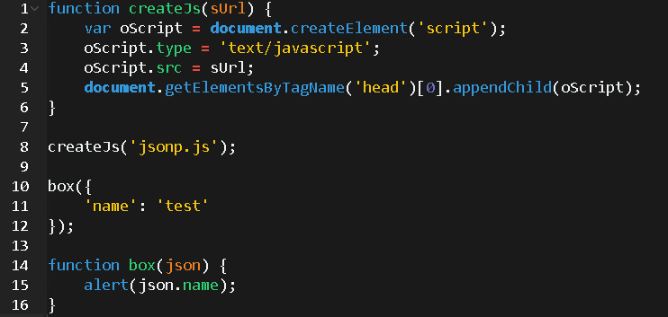
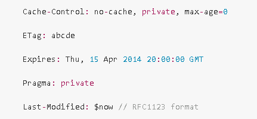

- absolute :生成绝对定位的元素， 相对于最近一级的 定位不是 static 的父元素来进行定位。
- fixed （老IE不支持）生成绝对定位的元素，相对于浏览器窗口进行定位。
- relative 生成相对定位的元素，相对于其在普通流中的位置进行定位。
- static 默认值。没有定位，元素出现在正常的流中
<strong>标签和<em>标签一样，用于强调文本，但它强调的程度更强一些。
em 是斜体强调标签，更强烈强调，表示内容的强调点。相当于html元素中的 <i>...</i>
<b> ,<i>是视觉要素，分别表示无意义的加粗，无意义的斜体。
em 和 strong 是表达要素(phrase elements)
attribute是dom元素在文档中作为html标签拥有的属性； property就是dom元素在js中作为对象拥有的属性。
对于html的标准属性来说，attribute和property是同步的，是会自动更新的， 但是对于自定义的属性来说，他们是不同步的。
浮动的框可以向左或向右移动，直到他的外边缘碰到包含框或另一个浮动框的边框为止。由于浮动框不在文档的普通流中，所以文档的普通流的块框表现得就像浮动框不存在一样。浮动的块框会漂浮在文档普通流的块框上。
display:none 隐藏对应的元素，在文档布局中不再给它分配空间，它各边的元素会合拢，就当他从来不存在。
visibility:hidden 隐藏对应的元素，但是在文档布局中仍保留原来的空间。
box-sizing属性主要用来控制元素的盒模型的解析模式。默认值是content-box。
标准浏览器下，按照W3C规范对盒模型解析，一旦修改了元素的边框或内距，就会影响元素的盒子尺寸，就不得不重新计算元素的盒子尺寸，从而影响整个页面的布局。
!important > id > class > tag
important 比 内联优先级高,但内联比 id 要高
CSS3实现圆角（border-radius），阴影（box-shadow）， 对文字加特效（text-shadow、），线性渐变（gradient），旋转（transform）
transform:rotate(9deg) scale(0.85,0.90) translate(0px,-30px) skew(-9deg,0deg);//旋转,缩放,定位,倾斜
增加了更多的CSS选择器 多背景 rgba
在CSS3中唯一引入的伪元素是::selection.
媒体查询，多栏布局
border-image
浮动元素脱离文档流，不占据空间。浮动元素碰到包含它的边框或者浮动元素的边框停留。
FOUC - Flash Of Unstyled Content 文档样式闪烁
<style type="text/css" media="all">@import "../fouc.css";</style>
而引用CSS文件的@import就是造成这个问题的罪魁祸首。IE会先加载整个HTML文档的DOM，然后再去导入外部的CSS文件，因此，在页面DOM加载完成到CSS导入完成中间会有一段时间页面上的内容是没有样式的，这段时间的长短跟网速，电脑速度都有关系。 解决方法简单的出奇，只要在<head>之间加入一个<link>或者<script>元素就可以了。
父元素和子元素同时左浮动，然后父元素相对左移动50%，再然后子元素相对右移动50%，或者子元素相对左移动-50%也就可以了。
左右两栏采用绝对定位，分别固定于页面的左右两侧，中间的主体栏用左右margin值撑开距离。
作用域链的作用是保证执行环境里有权访问的变量和函数是有序的，作用域链的变量只能向上访问，变量访问到window对象即被终止，作用域链向下访问变量是不被允许的。
时间上：onmousemove事件触发后，再触发onmouseover事件。
动作上：onmouseover只在刚进入区域时触发，onmousemove除了刚进入区域触发外，在区域内移动鼠标，也会触发
这是JavaScript最常见的垃圾回收方式，当变量进入执行环境的时候，比如函数中声明一个变量，垃圾回收器将其标记为“进入环境”，当变量离开环境的时候（函数执行结束）将其标记为“离开环境”。
垃圾回收器会在运行的时候给存储在内存中的所有变量加上标记，然后去掉环境中的变量以及被环境中变量所引用的变量（闭包），在这些完成之后仍存在标记的就是要删除的变量了
在低版本IE中经常会出现内存泄露，很多时候就是因为其采用引用计数方式进行垃圾回收。引用计数的策略是跟踪记录每个值被使用的次数，当声明了一个 变量并将一个引用类型赋值给该变量的时候这个值的引用次数就加1，如果该变量的值变成了另外一个，则这个值得引用次数减1，当这个值的引用次数变为0的时 候，说明没有变量在使用，这个值没法被访问了，因此可以将其占用的空间回收，这样垃圾回收器会在运行的时候清理掉引用次数为0的值占用的空间。
在IE中虽然JavaScript对象通过标记清除的方式进行垃圾回收，但BOM与DOM对象却是通过引用计数回收垃圾的， 也就是说只要涉及BOM及DOM就会出现循环引用问题。
jquery源码封装在一个匿名函数的自执行环境中，有助于防止变量的全局污染，然后通过传入window对象参数，可以使window对象作为局部变量使用，好处是当jquery中访问window对象的时候，就不用将作用域链退回到顶层作用域了，从而可以更快的访问window对象。同样，传入undefined参数，可以缩短查找undefined时的作用域链。
jquery将一些原型属性和方法封装在了jquery.prototype中，为了缩短名称，又赋值给了jquery.fn，这是很形象的写法。 有一些数组或对象的方法经常能使用到，应将它们保存为局部变量以提高访问速度。 将全局对象window作为参数传入，则可以使之在匿名函数内部作为局部变量访问，提供访问速度。 jquery实现的链式调用可以节约代码，所返回的都是同一个对象，可以提高代码效率。
新增模板字符串（为JavaScript提供了简单的字符串插值功能）、箭头函数（操作符左边为输入的参数，而右边则是进行的操作以及返回的值Inputs=>outputs。）、for-of（用来遍历数据—例如数组中的值。）arguments对象可被不定参数和默认参数完美代替。ES6将promise对象纳入规范，提供了原生的Promise对象。增加了let和const命令，用来声明变量。增加了块级作用域。let命令实际上就增加了块级作用域。ES6规定，var命令和function命令声明的全局变量，属于全局对象的属性；let命令、const命令、class命令声明的全局变量，不属于全局对象的属性。还有就是引入module模块的概念。
使用闭包主要是为了设计私有的方法和变量。闭包的优点是可以避免全局变量的污染，缺点是闭包会常驻内存，会增大内存使用量，使用不当很容易造成内存泄露。
闭包有三个特性：
null是一个表示"无"的对象，转为数值时为0；undefined是一个表示"无"的原始值，转为数值时为NaN。 当声明的变量还未被初始化时，变量的默认值为undefined。 null用来表示尚未存在的对象，常用来表示函数企图返回一个不存在的对象。
undefined表示"缺少值"，就是此处应该有一个值，但是还没有定义。典型用法是：
null表示"没有对象"，即该处不应该有值。典型用法是：
作用：动态改变某个类的某个方法的运行环境（执行上下文）。
内存泄漏指任何对象在您不再拥有或需要它之后仍然存在。 垃圾回收器定期扫描对象，并计算引用了每个对象的其他对象的数量。如果一个对象的引用数量为 0（没有其他对象引用过该对象），或对该对象的惟一引用是循环的，那么该对象的内存即可回收。 setTimeout 的第一个参数使用字符串而非函数的话，会引发内存泄漏。 闭包、控制台日志、循环（在两个对象彼此引用且彼此保留时，就会产生一个循环）
Javascript数据推送
概念:同源策略是客户端脚本（尤其是Javascript）的重要的安全度量标准。它最早出自Netscape Navigator2.0，其目的是防止某个文档或脚本从多个不同源装载。
这里的同源策略指的是：协议，域名，端口相同，同源策略是一种安全协议。 指一段脚本只能读取来自同一来源的窗口和文档的属性。
我们举例说明：比如一个黑客程序，他利用Iframe把真正的银行登录页面嵌到他的页面上，当你使用真实的用户名，密码登录时，他的页面就可以通过Javascript读取到你的表单中input中的内容，这样用户名，密码就轻松到手了。
缺点： 现在网站的JS 都会进行压缩，一些文件用了严格模式，而另一些没有。这时这些本来是严格模式的文件，被 merge 后，这个串就到了文件的中间，不仅没有指示严格模式，反而在压缩后浪费了字节。
GET：一般用于信息获取，使用URL传递参数，对所发送信息的数量也有限制，一般在2000个字符
POST：一般用于修改服务器上的资源，对所发送的信息没有限制。
GET方式需要使用Request.QueryString来取得变量的值，而POST方式通过Request.Form来获取变量的值， 也就是说Get是通过地址栏来传值，而Post是通过提交表单来传值。
然而，在以下情况中，请使用 POST 请求：
无法使用缓存文件（更新服务器上的文件或数据库） 向服务器发送大量数据（POST 没有数据量限制） 发送包含未知字符的用户输入时，POST 比 GET 更稳定也更可靠
可以通过锚点来记录状态，location.hash。让浏览器记录Ajax请求时页面状态的变化。 还可以通过HTML5的history.pushState，来实现浏览器地址栏的无刷新改变
在IE浏览器下，如果请求的方法是GET，并且请求的URL不变，那么这个请求的结果就会被缓存。解决这个问题的办法可以通过实时改变请求的URL，只要URL改变，就不会被缓存，可以通过在URL末尾添加上随机的时间戳参数('t'= + new Date().getTime()) 或者： open('GET','demo.php?rand=+Math.random()',true);
Promise 对象用来进行延迟(deferred) 和异步(asynchronous ) 计算。另外， fulfilled 与 rejected 一起合称 settled。依照 Promise/A+ 的定义，Promise 有四种状态：
构造一个 Promise，最基本的用法如下：
document.write()方法可以用在两个方面：页面载入过程中用实时脚本创建页面内容，以及用延时脚本创建本窗口或新窗口的内容。
document.write只能重绘整个页面。innerHTML可以重绘页面的一部分
假设：一个英文字符占用一个字节，一个中文字符占用两个字节
事件代理（Event Delegation），又称之为事件委托。是 JavaScript 中常用绑定事件的常用技巧。顾名思义，“事件代理”即是把原本需要绑定的事件委托给父元素，让父元素担当事件监听的职务。事件代理的原理是DOM元素的事件冒泡。使用事件代理的好处是可以提高性能。
原理是：动态插入script标签，通过script标签引入一个js文件，这个js文件载入成功后会执行我们在url参数中指定的函数，并且会把我们需要的json数据作为参数传入。
由于同源策略的限制，XmlHttpRequest只允许请求当前源（域名、协议、端口）的资源，为了实现跨域请求，可以通过script标签实现跨域请求，然后在服务端输出JSON数据并执行回调函数，从而解决了跨域的数据请求。
优点是兼容性好，简单易用，支持浏览器与服务器双向通信。缺点是只支持GET请求。
JSONP:json+padding(内填充),顾名思义,就是把JSON填充到一个盒子里
服务器端对于CORS的支持，主要就是通过设置Access-Control-Allow-Origin来进行的。如果浏览器检测到相应的设置，就可以允许Ajax进行跨域的访问。
将子域和主域的document.domain设为同一个主域.前提条件：这两个域名必须属于同一个基础域名!而且所用的协议，端口都要一致，否则无法利用document.domain进行跨域
主域相同的使用document.domain
window对象有个name属性，该属性有个特征：即在一个窗口(window)的生命周期内,窗口载入的所有的页面都是共享一个window.name的，每个页面对window.name都有读写的权限，window.name是持久存在一个窗口载入过的所有页面中的
还有flash、在服务器上设置代理页面等跨域方式。个人认为window.name的方法既不复杂，也能兼容到几乎所有浏览器，这真是极好的一种跨域方法。
JSON相对于XML来讲，数据的体积小，传递的速度更快些。
JSON与JavaScript的交互更加方便，更容易解析处理，更好的数据交互。
JSON对数据的描述性比XML较差。
JSON的速度要远远快于XML。
WebPack 是一个模块打包工具，你可以使用WebPack管理你的模块依赖，并编绎输出模块们所需的静态文件。它能够很好地管理、打包Web开发中所用到的HTML、Javascript、CSS以及各种静态文件（图片、字体等），让开发过程更加高效。对于不同类型的资源，webpack有对应的模块加载器。webpack模块打包器会分析模块间的依赖关系，最后 生成了优化且合并后的静态资源。
webpack是加强版的Browserify。 webpack的两大特色：
webpack 是以commonJS的形式来书写脚本滴，但对 AMD/CMD 的支持也很全面，方便旧项目进行代码迁移。
webpack具有requireJs和browserify的功能，但仍有很多自己的新特性：
为了准确无误地把数据送达目标处，TCP协议采用了三次握手策略。用TCP协议把数据包送出去后，TCP不会对传送 后的情况置之不理，它一定会向对方确认是否成功送达。握手过程中使用了TCP的标志：SYN和ACK。
发送端首先发送一个带SYN标志的数据包给对方。接收端收到后，回传一个带有SYN/ACK标志的数据包以示传达确认信息。 最后，发送端再回传一个带ACK标志的数据包，代表“握手”结束。 若在握手过程中某个阶段莫名中断，TCP协议会再次以相同的顺序发送相同的数据包。
TCP（Transmission Control Protocol，传输控制协议）是基于连接的协议，也就是说，在正式收发数据前，必须和对方建立可靠的连接。一个TCP连接必须要经过三次“对话”才能建立起来
UDP（User Data Protocol，用户数据报协议）是与TCP相对应的协议。它是面向非连接的协议，它不与对方建立连接，而是直接就把数据包发送过去！ UDP适用于一次只传送少量数据、对可靠性要求不高的应用环境。
渐进增强 ：针对低版本浏览器进行构建页面，保证最基本的功能，然后再针对高级浏览器进行效果、交互等改进和追加功能达到更好的用户体验。
优雅降级 ：一开始就构建完整的功能，然后再针对低版本浏览器进行兼容。
就是通过把SQL命令插入到Web表单递交或输入域名或页面请求的查询字符串，最终达到欺骗服务器执行恶意的SQL命令。总的来说有以下几点：
Xss(cross-site scripting)攻击指的是攻击者往Web页面里插入恶意 html标签或者javascript代码。比如：攻击者在论坛中放一个看似安全的链接，骗取用户点击后，窃取cookie中的用户私密信息；或者攻击者在论坛中加一个恶意表单，当用户提交表单的时候，却把信息传送到攻击者的服务器中，而不是用户原本以为的信任站点。
代码里对用户输入的地方和变量都需要仔细检查长度和对” <”,”>”,”;”,”’”等字符做过滤；其次任何内容写到页面之前都必须加以encode，避免不小心把html tag 弄出来。这一个层面做好，至少可以堵住超过一半的XSS 攻击。
首先，避免直接在cookie 中泄露用户隐私，例如email、密码等等。
其次，通过使cookie 和系统ip 绑定来降低cookie 泄露后的危险。这样攻击者得到的cookie 没有实际价值，不可能拿来重放。
尽量采用POST 而非GET 提交表单
XSS是获取信息，不需要提前知道其他用户页面的代码和数据包。CSRF是代替用户完成指定的动作，需要知道其他用户页面的代码和数据包。
要完成一次CSRF攻击，受害者必须依次完成两个步骤：
WebSocket是Web应用程序的传输协议，它提供了双向的，按序到达的数据流。他是一个HTML5协议，WebSocket的连接是持久的，他通过在客户端和服务器之间保持双工连接，服务器的更新可以被及时推送给客户端，而不需要客户端以一定时间间隔去轮询。
HTTP协议通常承载于TCP协议之上，有时也承载于TLS或SSL协议层之上，这个时候，就成了我们常说的HTTPS。 默认HTTP的端口号为80，HTTPS的端口号为443。
因为网络请求需要中间有很多的服务器路由器的转发。中间的节点都可能篡改信息，而如果使用HTTPS，密钥在你和终点站才有。https之所以比http安全，是因为他利用ssl/tls协议传输。它包含证书，卸载，流量转发，负载均衡，页面适配，浏览器适配，refer传递等。保障了传输过程的安全性
AMD 是提前执行，CMD 是延迟执行。
AMD推荐的风格通过返回一个对象做为模块对象，CommonJS的风格通过对module.exports或exports的属性赋值来达到暴露模块对象的目的。
代码层面：避免使用css表达式，避免使用高级选择器，通配选择器。
缓存利用：缓存Ajax，使用CDN，使用外部js和css文件以便缓存，添加Expires头，服务端配置Etag，减少DNS查找等
请求数量：合并样式和脚本，使用css图片精灵，初始首屏之外的图片资源按需加载，静态资源延迟加载。
请求带宽：压缩文件，开启GZIP，
尽量使用css3动画，开启硬件加速。适当使用touch事件代替click事件。避免使用css3渐变阴影效果。
当发送一个服务器请求时，浏览器首先会进行缓存过期判断。浏览器根据缓存过期时间判断缓存文件是否过期。
情景一：若没有过期，则不向服务器发送请求，直接使用缓存中的结果，此时我们在浏览器控制台中可以看到 200 OK(from cache) ，此时的情况就是完全使用缓存，浏览器和服务器没有任何交互的。
情景二：若已过期，则向服务器发送请求，此时请求中会带上①中设置的文件修改时间，和Etag
然后，进行资源更新判断。服务器根据浏览器传过来的文件修改时间，判断自浏览器上一次请求之后，文件是不是没有被修改过；根据Etag，判断文件内容自上一次请求之后，有没有发生变化
情形一：若两种判断的结论都是文件没有被修改过，则服务器就不给浏览器发index.html的内容了，直接告诉它，文件没有被修改过，你用你那边的缓存吧—— 304 Not Modified，此时浏览器就会从本地缓存中获取index.html的内容。此时的情况叫协议缓存，浏览器和服务器之间有一次请求交互。
情形二：若修改时间和文件内容判断有任意一个没有通过，则服务器会受理此次请求，之后的操作同①
① 只有get请求会被缓存，post请求不会
Etag由服务器端生成，客户端通过If-Match或者说If-None-Match这个条件判断请求来验证资源是否修改。常见的是使用If-None-Match。请求一个文件的流程可能如下：
====第一次请求===
1.客户端发起 HTTP GET 请求一个文件；
2.服务器处理请求，返回文件内容和一堆Header，当然包括Etag(例如"2e681a-6-5d044840")(假设服务器支持Etag生成和已经开启了Etag).状态码200
====第二次请求===
客户端发起 HTTP GET 请求一个文件，注意这个时候客户端同时发送一个If-None-Match头，这个头的内容就是第一次请求时服务器返回的Etag：2e681a-6-5d0448402.服务器判断发送过来的Etag和计算出来的Etag匹配，因此If-None-Match为False，不返回200，返回304，客户端继续使用本地缓存；流程很简单，问题是，如果服务器又设置了Cache-Control:max-age和Expires呢，怎么办?
答案是同时使用，也就是说在完全匹配If-Modified-Since和If-None-Match即检查完修改时间和Etag之后， 服务器才能返回304(不要陷入到底使用谁的问题怪圈) 。为什么使用Etag请求头? Etag 主要为了解决 Last-Modified 无法解决的一些问题。
Expires要求客户端和服务端的时钟严格同步。HTTP1.1引入Cache-Control来克服Expires头的限制。如果max-age和Expires同时出现，则max-age有更高的优先级。
栈的插入和删除操作都是在一端进行的，而队列的操作却是在两端进行的。 队列先进先出，栈先进后出。 栈只允许在表尾一端进行插入和删除，而队列只允许在表尾一端进行插入，在表头一端进行删除
栈区（stack）— 由编译器自动分配释放 ，存放函数的参数值，局部变量的值等。
堆区（heap） — 一般由程序员分配释放， 若程序员不释放，程序结束时可能由OS回收。
堆（数据结构）：堆可以被看成是一棵树，如：堆排序；
栈（数据结构）：一种先进后出的数据结构。
"快速排序"的思想很简单，整个排序过程只需要三步：
HTTP/2引入了“服务端推（server push）”的概念，它允许服务端在客户端需要数据之前就主动地将数据发送到客户端缓存中，从而提高性能。
HTTP/2提供更多的加密支持
HTTP/2使用多路技术，允许多个消息在一个连接上同时交差。
它增加了头压缩（header compression），因此即使非常小的请求，其请求和响应的header都只会占用很小比例的带宽。
backbone具有依赖性，依赖underscore.js。Backbone + Underscore + jQuery(or Zepto) 就比一个AngularJS 多出了2 次HTTP请求.
Backbone的Model没有与UI视图数据绑定，而是需要在View中自行操作DOM来更新或读取UI数据。AngularJS与此相反，Model直接与UI视图绑定，Model与UI视图的关系，通过directive封装，AngularJS内置的通用directive，就能实现大部分操作了，也就是说，基本不必关心Model与UI视图的关系，直接操作Model就行了，UI视图自动更新。
AngularJS的directive，你输入特定数据，他就能输出相应UI视图。是一个比较完善的前端MVW框架，包含模板，数据双向绑定，路由，模块化，服务，依赖注入等所有功能，模板功能强大丰富，并且是声明式的，自带了丰富的 Angular 指令。
cookie虽然在持久保存客户端数据提供了方便，分担了服务器存储的负担，但还是有很多局限性的。
每个特定的域名下最多生成20个cookie
1.IE6或更低版本最多20个cookie
2.IE7和之后的版本最后可以有50个cookie。
3.Firefox最多50个cookie
4.chrome和Safari没有做硬性限制
IE和Opera 会清理近期最少使用的cookie，Firefox会随机清理cookie。
cookie的最大大约为4096字节，为了兼容性，一般不能超过4095字节。
IE 提供了一种存储可以持久化用户数据，叫做userdata，从IE5.0就开始支持。每个数据最多128K，每个域名下最多1M。这个持久化数据放在缓存中，如果缓存没有清理，那么会一直存在。
Web Storage的概念和cookie相似，区别是它是为了更大容量存储设计的。Cookie的大小是受限的，并且每次你请求一个新的页面的时候Cookie都会被发送过去，这样无形中浪费了带宽，另外cookie还需要指定作用域，不可以跨域调用。
除此之外，Web Storage拥有setItem,getItem,removeItem,clear等方法，不像cookie需要前端开发者自己封装setCookie，getCookie。
但是cookie也是不可以或缺的：cookie的作用是与服务器进行交互，作为HTTP规范的一部分而存在 ，而Web Storage仅仅是为了在本地“存储”数据而生。
浏览器的支持除了IE７及以下不支持外，其他标准浏览器都完全支持(ie及FF需在web服务器里运行)，值得一提的是IE总是办好事，例如IE7、IE6中的userData其实就是javascript本地存储的解决方案。通过简单的代码封装可以统一到所有的浏览器都支持web storage。
localStorage和sessionStorage都具有相同的操作方法，例如setItem、getItem和removeItem等。
简单来说，浏览器会解析`HTML`生成`DOM Tree`，其次会根据CSS生成CSS Rule Tree，而`javascript`又可以根据`DOM API`操作`DOM`
IE6 两个并发，iE7升级之后的6个并发，之后版本也是6个 Firefox，chrome也是6个
Flash适合处理多媒体、矢量图形、访问机器；对CSS、处理文本上不足，不容易被搜索。 -Ajax对CSS、文本支持很好，支持搜索；多媒体、矢量图形、机器访问不足。
共同点：与服务器的无刷新传递消息、用户离线和在线状态、操作DOM
网站重构：在不改变外部行为的前提下，简化结构、添加可读性，而在网站前端保持一致的行为。也就是说是在不改变UI的情况下，对网站进行优化，在扩展的同时保持一致的UI。
对于传统的网站来说重构通常是：
所谓组件，即封装起来的具有独立功能的UI部件。如：component , widget , module , plugin ...
CommonJS是服务器端模块的规范，Node.js采用了这个规范。CommonJS规范加载模块是同步的，也就是说，只有加载完成，才能执行后面的操作。AMD规范则是非同步加载模块，允许指定回调函数。
AMD推荐的风格通过返回一个对象做为模块对象，CommonJS的风格通过对module.exports或exports的属性赋值来达到暴露模块对象的目的。
git pull：相当于是从远程获取最新版本并merge到本地
git fetch：相当于是从远程获取最新版本到本地，不会自动merge
View 传送指令到 Controller
Controller 完成业务逻辑后，要求 Model 改变状态
Model 将新的数据发送到 View，用户得到反馈
View：UI界面
ViewModel：它是View的抽象，负责View与Model之间信息转换，将View的Command传送到Model
Model：数据访问层
应用层：应用层、表示层、会话层（从上往下）（HTTP、FTP、SMTP、DNS）；传输层（TCP和UDP）；网络层（IP）；物理和数据链路层（以太网）每一层的具体作用如下：
各种协议
MySQL是传统的关系型数据库，MongoDB则是非关系型数据库
mongodb以BSON结构（二进制）进行存储，对海量数据存储有着很明显的优势。
服务器首先产生ETag，服务器可在稍后使用它来判断页面是否已经被修改。本质上，客户端通过将该记号传回服务器要求服务器验证其（客户端）缓存。
304是HTTP状态码，服务器用来标识这个文件没修改，不返回内容，浏览器在接收到个状态码后，会使用浏览器已缓存的文件
客户端请求一个页面（A）。 服务器返回页面A，并在给A加上一个ETag。 客户端展现该页面，并将页面连同ETag一起缓存。 客户再次请求页面A，并将上次请求时服务器返回的ETag一起传递给服务器。 服务器检查该ETag，并判断出该页面自上次客户端请求之后还未被修改，直接返回响应304（未修改——Not Modified）和一个空的响应体。
高复用低耦合，这样文件小，好维护，而且好扩展。
负责前端团队的管理及与其他团队的协调工作，提升团队成员能力和整体效率； 带领团队完成研发工具及平台前端部分的设计、研发和维护； 带领团队进行前端领域前沿技术研究及新技术调研，保证团队的技术领先 负责前端开发规范制定、功能模块化设计、公共组件搭建等工作，并组织培训。
前端是最贴近用户的程序员，比后端、数据库、产品经理、运营、安全都近。
前端是最贴近用户的程序员，前端的能力就是能让产品从 90分进化到 100 分，甚至更好，